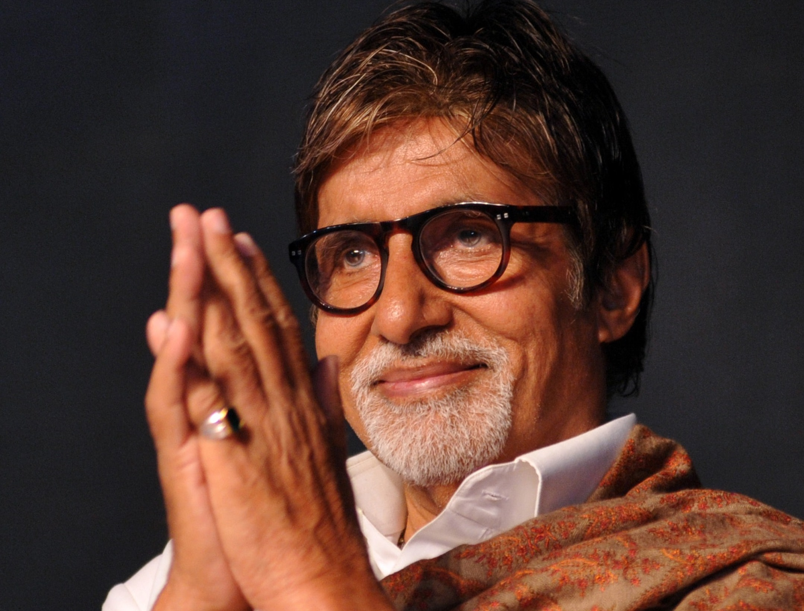

Amitabh Bachchan (born on 11 October 1942) is an Indian actor, film producer, television host, occasional playback singer and former politician, who works in Hindi cinema. In a film career spanning over five decades, he has starred in more than 200 films. Bachchan is widely regarded as one of the most successful and influential actors in the history of Indian cinema. He is referred to as the Shahenshah of Bollywood, Sadi Ke Mahanayak (Hindi for, "Greatest actor of the century"), Star of the Millennium, or Big B. His dominance in the Indian movie scenario during the 1970s–80s made the French director François Truffaut call it a "one-man industry"
Bachchan made his film debut in 1969, as a voice narrator in Mrinal Sen's National Award-winning film Bhuvan Shome. His first acting role was as one of the seven protagonists in the film Saat Hindustani, directed by Khwaja Ahmad Abbas and featuring Utpal Dutt, Anwar Ali (brother of comedian Mehmood), Madhu and Jalal Agha.
Anand (1971) followed, in which Bachchan starred alongside Rajesh Khanna. His role as a doctor with a cynical view of life garnered Bachchan his first Filmfare Award for Best Supporting Actor. He then played his first antagonist role as an infatuated lover-turned-murderer in Parwana (1971). Following Parwana were several films including Reshma Aur Shera (1971). During this time, he made a guest appearance in the film Guddi which starred his future wife Jaya Bhaduri. He narrated part of the film Bawarchi. In 1972, he made an appearance in the road action comedy Bombay to Goa directed by S. Ramanathan which was moderately successful. Many of Bachchan's films during this early period did not do well. His only film with Mala Sinha, Sanjog (1972) was also a box office failure
In 2000, Bachchan hosted the first season of Kaun Banega Crorepati (KBC), the Indian adaptation of the British television game show, Who Wants to Be a Millionaire?. The show was well received. A second season followed in 2005 but its run was cut short by Star Plus when Bachchan fell ill in 2006. He then returned to host the fourth season, and has hosted the show since.
In 2009, Bachchan hosted the third season of the reality show Bigg Boss. In 2010, Bachchan hosted the fourth season of KBC. The fifth season started on 15 August 2011 and ended on 17 November 2011. The show became a massive hit with audiences and broke many TRP Records. CNN IBN awarded Indian of the Year- Entertainment to Team KBC and Bachchan. The Show also grabbed all the major Awards for its category.
The sixth season was also hosted by Bachchan, commencing on 7 September 2012, broadcast on Sony TV and received the highest number of viewers thus far.[citation needed] In 2014, he debuted in the fictional Sony Entertainment Television TV series titled Yudh playing the lead role of a businessman battling both his personal and professional life.
In 1984, Bachchan took a break from acting and briefly entered politics in support of a long-time family friend, Rajiv Gandhi. He contested the Allahabad's (presently Prayagraj Lok Sabha constituency) seat for the 8th Lok Sabha against H. N. Bahuguna, former Chief Minister of Uttar Pradesh. With 68.2% of the votes in his favour, he won by one of the highest victory margins ever in Indian elections. In 1987, Indian Express said his brother Ajitabh Bachchan owned an apartment in Switzerland, giving rise to speculations about his involvement in the "Bofors scandal", revealed in the year before. Bachchan resigned from his seat in July 1987. Ajitabh Bachchan sued Swedish newspaper Dagens Nyheter for linking him to Bofors payments in 1990 and won damages in the United Kingdom. Sten Lindstrom, the Swedish police chief who had investigated the case, said in 2012 that "Indian investigators planted the Bachchan angle on" Dagens Nyheter.
Bachchan has been married to veteran actress and politician Jaya Bhaduri since 3 June 1973, when he was 30 years old, and together they have two children; Abhishek, an actor, and Shweta, an author, journalist and former model. Abhishek married actress Aishwarya Rai, and they have a daughter named Aaradhya. Shweta is married to businessman Nikhil Nanda who is a part of the Kapoor family of actors. They have a daughter, Navya Naveli, and a son, Agastya. Amitabh's family lives in Mumbai in Maharashtra. His younger brother Ajitabh Bachchan is a businessman. He did business and lived in London for brief period of time. Presently he is living in India. He and his family choose to stay away from limelight. His wife Ramola is a fashion designer and was active in business. Ajitabh has one son, Bhim, and three daughters Naina, Namrata and Nilima. Naina Bachchan is married to actor Kunal Kapoor.
Apart from industry awards won for his performances throughout the years, Bachchan has received several honours for his achievements in the Indian film industry. In 1991, he became the first artist to receive the Filmfare Lifetime Achievement Award, which was established in the name of Raj Kapoor. Bachchan was crowned as Superstar of the Millennium in 2000 at the Filmfare Awards.
Amitabh Bachchan